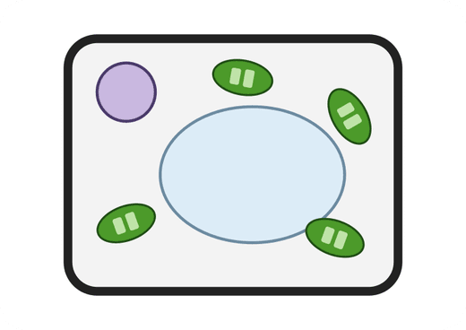
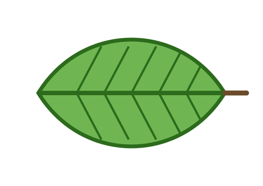

Einstieg · Do Now · Wiederholung
Do Now
3 Min. · allein, ins HeftDNOrdne den Bildern die Organisationsstufen zu: Zelle, Gewebe, Organ, Organismus. Schreibe sie von klein nach groß in dein Heft.D
 A
A B
B
C
DErarbeitung 1 · M1 und M2
Was braucht die Pflanze?
10 Min. · allein, dann Partner2Lies M1. Markiere in jedem Absatz 1–2 Schlüsselwörter.D–E
3Beschrifte die Pfeile in M2 mit diesen Wörtern: Licht, Wasser, Kohlenstoffdioxid, Sauerstoff, Traubenzucker.E
Fo-to-syn-the-se · Koh-len-stoff-di-oxid · Sau-er-stoff · Trau-ben-zu-cker · Was-ser · Licht

Zum Lesen: Vorlesen lassen ist erlaubt.
Sicherung · am Board
Pfeile beschriften
3 Min. · am Board ziehenWort ziehen oder antippen, dann Feld am Pfeil antippen.
Erarbeitung 2 · M1 und M3
Wo geschieht die Fotosynthese?
8 Min. · Partnerarbeit4Gib die Wortgleichung der Fotosynthese an. Nutze M1 und M2.E
5Beschreibe mit M1 und M3, welche Aufgabe die Chloroplasten in der Blattzelle haben.E

Tippe auf alle Chloroplasten: 0 von 7
Vertiefung · Erweiterung ●●●
Zusatz für Schnelle
Niveau F7aBeurteile Van Helmonts Deutung: Die Weide habe ihre Masse nur aus dem Wasser aufgebaut.F
7bErläutere, warum die Erde trotzdem 0,06 kg leichter wurde.F